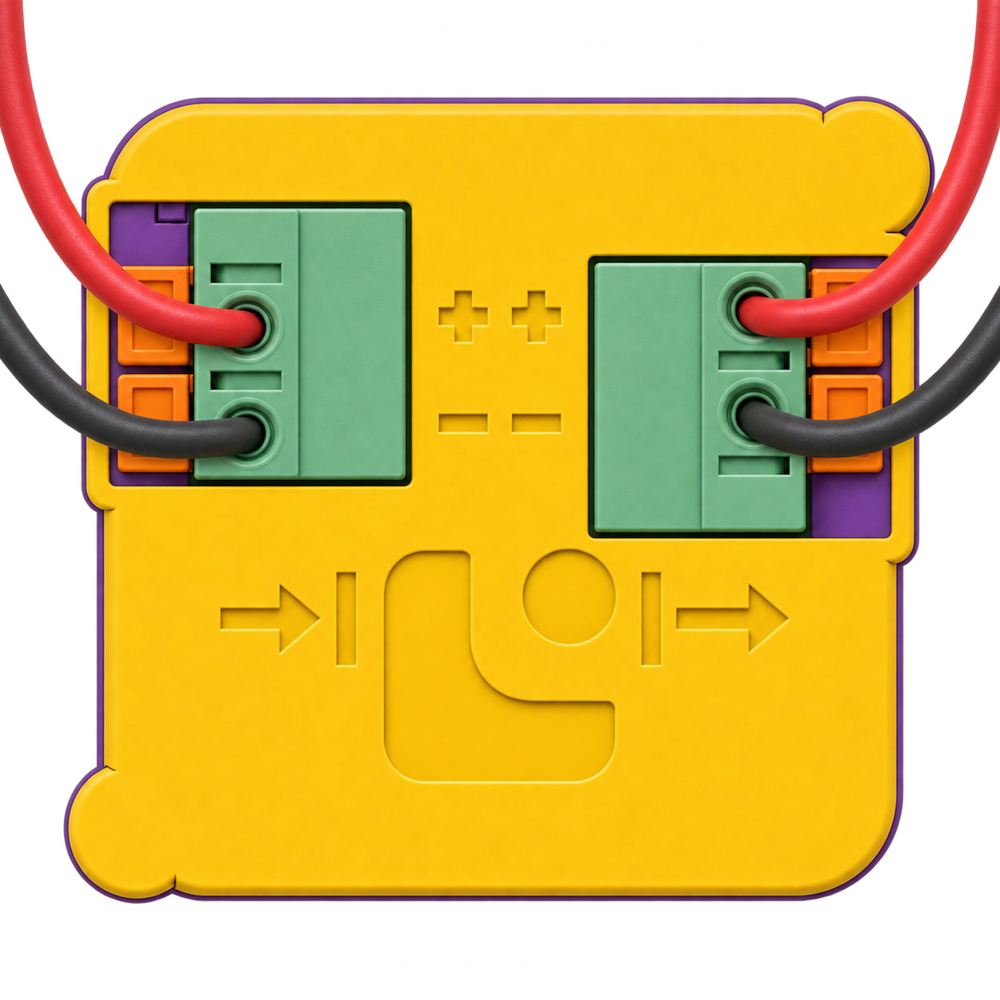

一根 USB-C，免装专用驱动
使用系统的 USB CDC 驱动，无需安装专用驱动。USB 负责控制，设备由独立直流电源供电；系统串口权限可按使用说明设置。
下面是一台模拟的 voloo，连接 12 V 电源和带输出电容的设备。看看普通 OFF 和主动泄放的区别：OFF 只是断开，电容里的电会慢慢漏；discharge 会把 VOUT 拉到 1 V 以下并确认。
按住 0.6 秒切换模拟输出。短按只会提示。
曲线使用简化模型演示残压变化，不是实测波形或放电时间承诺。
使用系统的 USB CDC 驱动，无需安装专用驱动。USB 负责控制，设备由独立直流电源供电；系统串口权限可按使用说明设置。
开关之后会再检查设备状态，告诉你执行结果。连接中断、结果不确定时会明确提示，让你先查状态再继续。
关断后仍可能有残压。discharge 主动泄放并确认输出 ≤ 1 V；cycle 再接上等待和重新上电，方便重复冷启动。
习惯点按钮，就用网页仪表盘；习惯写脚本，就用命令行或本地 HTTP API。AI Agent 可以通过 MCP 接入。
每台 voloo 各自通过 USB 连接电脑。设置昵称（如 bench-a）后，重新插拔仍可识别，多台按名字查看和控制。
操作锁会在锁定期间拒绝供电和改名操作，明确解锁后恢复。日志记录操作来源与结果；voloo doctor 提供 USB、权限和读数的排查建议。
确认目标后，Agent 可调用 voloo 关断、主动泄放并重新上电。需要查看设备启动日志时，可结合现有串口工具继续调试。先安装 voloo，再按客户端配置本地 MCP 服务：
claude mcp add voloo -- voloo mcp
安装 voloo 后，在终端执行这条注册命令。
codex mcp add voloo -- voloo mcp
在终端注册后，Codex 会使用 ~/.codex/config.toml 中的 MCP 配置。
{
"mcpServers": {
"voloo": {
"type": "stdio",
"command": "voloo",
"args": [
"mcp"
]
}
}
}将 voloo 条目合并到 ~/.cursor/mcp.json 的 mcpServers 中，保留已有配置。 官方配置说明 ↗
{
"mcpServers": {
"voloo": {
"type": "stdio",
"command": "voloo",
"args": [
"mcp"
],
"tools": [
"*"
]
}
}
}VS Code Copilot：将 voloo 条目合并到项目根目录的 .mcp.json，并保留已有配置；请按所用版本对照官方说明。 官方配置说明 ↗
{
"command": "voloo",
"args": [
"mcp"
]
}其他支持本地 stdio MCP 的客户端：按其配置方式填写命令 voloo、参数 mcp，由客户端启动服务。
以上是本地 stdio MCP 的配置示例；配置位置和权限设置依客户端版本而异。接入后先读取设备列表和状态，明确目标后再控制供电。
Agent 可以查看设备、读取状态、开关电源和查询操作日志。需要只读使用时，在 voloo 的 ~/.voloo/config.toml 的 [mcp] 下设置 read_only = true。
预设内容演示，未连接真实 Agent 或设备。
把重复的供电操作交给 voloo，让注意力留在正在调试的东西上。
泄放、等待、重新上电，一条命令完成。接着查看启动日志，反复验证启动行为。
voloo cycle bench-a --off-ms 2000把开关电源接进现有脚本。每一步查看执行结果，让启动测试和故障复现可以重复进行。
voloo status bench-a --json给每台 voloo 起个好记的名字，在仪表盘查看状态，控制前确认目标。临时不想被改动，就锁定它。
voloo ui超过 3 A 可能损坏硬件。3 A 恒流负载已实测工作正常。功率按 P = U × I 换算；84 W 对应 28 V、3 A 这个工作点，不能据此在低压下使用超过 3 A 的电流。
有效 VIN > 30.5 V 时自动关闭输出并锁定过压保护。VIN < 30.0 V 时，过压锁定自动解除，但输出仍保持关闭。用户需在仪表盘长按“开启供电”，或发送新的开启命令，才会恢复供电；不需要额外的过压复位命令。保护阈值不改变标称工作范围。
实测恒流负载不等于任意启动浪涌或感性回灌保证。voloo 不自动调压、限流或限功率，请使用外部电源限流；主动泄放用于断电后的残压，不是持续吸收功率的电子负载。
正负极接反会损坏硬件。负载的供电电源与通过 USB 操作 voloo 的电脑，请分别使用独立电源/适配器，不要共用同一个适配器。

正确接法：电源 A → voloo IN / OUT → 设备；另一电源 B → USB 操作电脑。设备只从 OUT 取电，不从电脑 USB 或其他接口同时取电。
橙色件负责夹线，不是电源开关。只在断电后接拔线；如有残压，先执行泄放并确认输出 ≤ 1 V，再断开外部电源和 USB-C。
 1 · 剥线 11 mm
1 · 剥线 11 mm线芯齐整，不留散丝；预制端头先确认匹配。
 2 · 按住橙色件
2 · 按住橙色件按住对应按压件，方向朝电路板，使夹口打开。
 3 · 插入绿色圆孔
3 · 插入绿色圆孔持续按住，把线插入相邻圆孔，铜芯完全进入。
 4 · 松开，轻拉
4 · 松开，轻拉确认夹紧，孔外不露铜。橙色开口不是插线孔。
确认接线及电气边界后，再打开电源。
先安装 Node.js 18 或更新版本，再执行 npm 安装命令。安装后运行 voloo ls 查看设备，或用 voloo demo 先体验模拟仪表盘。
# Node 18+ · 安装 voloo $ npm install -g @librezoo/voloo # 或者不安装，直接运行 $ npx @librezoo/voloo ls
# 没有硬件也能看仪表盘，设备是模拟的 $ voloo demo
先量电源极性，再关闭电源接线，+ 对 +。
设备只从这里取电，拔掉它的其他供电。
voloo ls 列出设备；输出关闭且空闲时，可用 voloo name <UID> bench-a 设置昵称。
确认接线、限流和目标后，使用 voloo on bench-a 或 voloo discharge bench-a；也可运行 voloo ui。